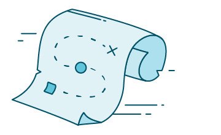
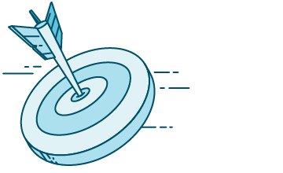

Design Playbook
The User Experience
Our UX Philosophy
- Above all, support the needs of our users
- Make a product that is helpful, intuitive and rewarding
- Good user experience is holistic, from large-scope marketing campaigns to simple interactions within the app
- A product doesn't have to be feature-rich to be great
Our UX Values
Empathy
- We listen to and support our users.
- We respect our users time.
- We inform and respond with timely and relevant communication.
- We reward investment.
Simplicity
- We work hard so our customers don't have to.
- We think holistically but make small changes along the way.
- We organize things so they are clear and make sense.
Consistency
- We connect related experiences to each other.
- We harmonize with the familiar.
- We standardize elements so we can use them again.
Gathering Feedback
Below are a few ways we can gather data to be used in designing and validating user experiences.
| Method | Cost | How | Pros | Cons | Artifacts |
|---|---|---|---|---|---|
| Surveys | Low | Create list of questions and send out for user responses | Identify user needs, easily, and get a large amount of data | Not a conversation, and the quality of feedback depends on the questions asked | Opinions |
| Interview | Medium | Early on in design process, talk with individual users about their experience | Gain personal insight into individual user needs and scenarios | Quality depends on the questions and moderation of the conversation | Personas, User Scenarios, and Experience Maps |
| Diary & Journal Entries | Medium | As group of users to document their habits for a period of time | Gain personal insight into individual user needs and scenarios | User Scenarios, and Experience Maps | |
| Card Sorting | Medium | Used to validate information architecture | Easy to get a large amount of data | Information Architecture | |
| Ethnographic Studies | Medium | Watch users interact with the product in their actual environment | Able to see user needs in context of actual use | Takes a long time to do it right, and is difficult to do for mobile users | Personas, User Scenarios, and Experience Maps |
| Focus Groups | High | Gather group of users to discuss possible solutions to problems | Able to ask clarifying questions to dig deeper into user needs | Expensive, and participants may be influenced by other participants | Dialog |
| Concept Testing | High | Gather group of users and present with a concept or prototype to get their direct feedback. | Able to ask clarifying questions to dig deeper into user needs, and the method is more open ended than usability testing | Expensive, more work is needed up front before testing, and it is challenging to maintain a relevant and controlled environment | Empirical Data |
| Usability Testing | High | Present users with a concept or prototype that is aimed at solving a problem for a specific user, a specific task, in a specific context. | Able to ask clarifying questions to dig deeper into user needs, and it results in mpirical evidence based on specific tasks. | Expensive, and it is challending to maintain a relevant and controlled environment |